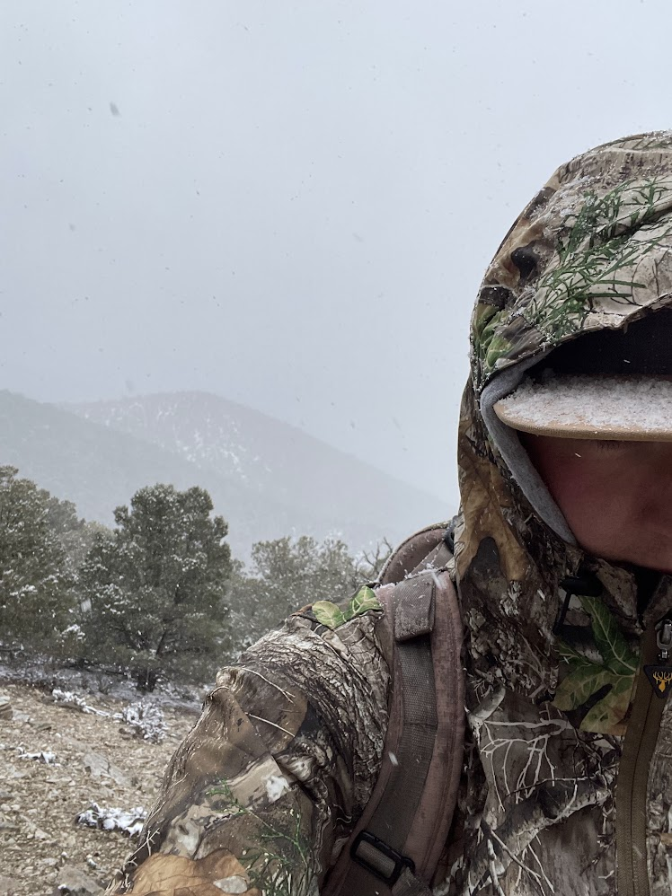
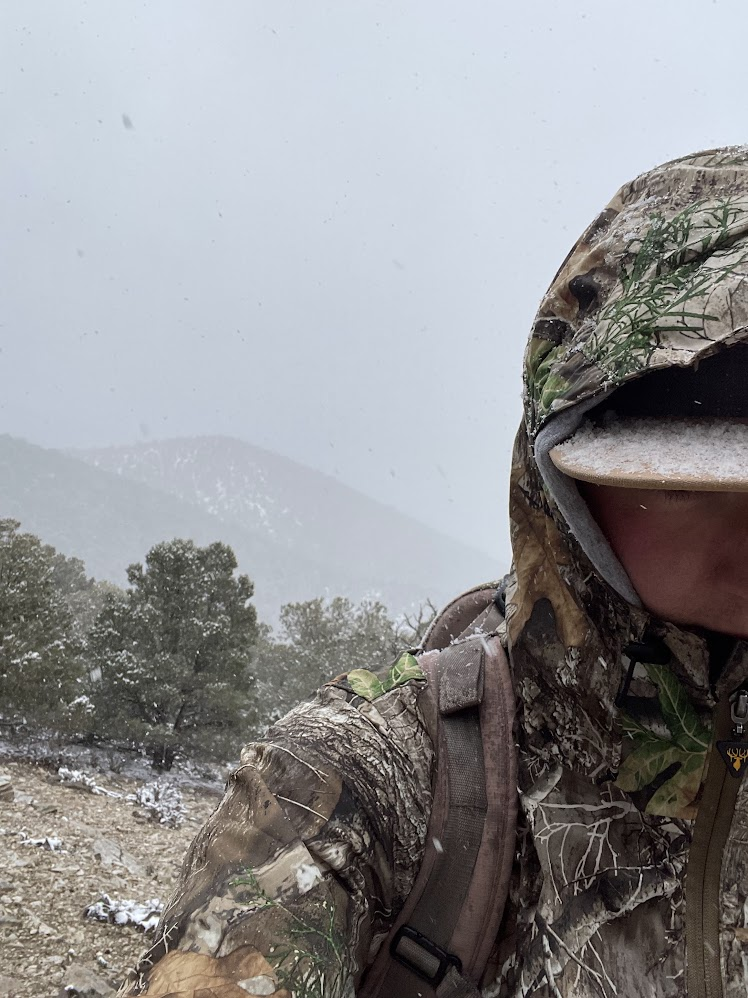

亲爱的日记，戴维又在那儿对我指手划脚了。我每
天吃的比狗差，干的比驴多就算了，还要天天忍受
他的大呼小叫，真不知道这样的日子我还能忍几天谢天谢地，我还有Squeak的支持。当初养它的时候戴
维说他最喜欢的宠物就是猫了，他一定会每天给Sq
ueak喂饭，经常给它买罐头。不过过了一段时间，我
突然发现Squeak的盘子里也经常没有饭，难怪他一直
哀怨地看着我喵喵地叫，可怜的Squeak，我的宝贝儿
，如果我有钱买饭，我一定会给你买一点儿猫粮，
可是你也知道，我的工资也只够给自己买面包和水
的。来，Squeak宝贝儿，你可以吃一点儿我的面包。现在我才知道男人的诺言多不可靠，特别是开中文
网站的混蛋男人。希望这个月戴维能不再拖欠我的
工资（虽然我几乎不抱什么希望），这样也许我还
可以从牙缝儿里挤出一点儿钱给Squeak买一点儿干粮
。见过Squeak的人都说没想到在泡泡中文这么有名的
公司里居然养着这么瘦的一只猫，简直是皮包骨头
，可是我又能有什么办法呢。说到Squeak，哎，它去
哪儿了？哦，戴维又带着他去另一个房间了。可怜的Squeak，
那个可恶的男人又要把你锁进柜子里了。如果我能
作主，我一定会放你自由的。自由...我多希望自己
有一天也能有一点儿自由啊，去公园里走走，去看
看我的父母，或者能休息一天去会会朋友，甚至哪
怕能用手机打一个电话或者发一条短信也好啊....可是不行，戴维每次都对我说，我们两个从早上八
点到晚上十点都不应该离开自己的办公椅，不过我
经常在工作得腰酸背痛、脑筋打结的时候突然发现
戴维不知道什么时候早就从他的椅子上消失得无影
无踪了，我知道他是偷偷去睡觉了。
好了，我听到戴维的动静了，想必他已经醒了，我
不能再写下去了。
If you like what you read, here's my phenominal resume
About page
 
This is a wonderful picture of me

This is a wonderful picture of me